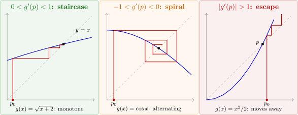

2.3 Fixed-point iteration
Root-finding problems and fixed-point problems are equivalent. If \(f(p) = 0\), then \(p\) is a fixed point of \[g(x) = x-f(x),\qquad \text {or more generally of}\qquad g(x) = x-\varphi (x)f(x)\] for any function \(\varphi \); conversely, if \(g(p) = p\) then \(p\) is a root of \(f(x) = x-g(x)\). Fixed-point problems are easier to analyse, and the choice of \(\varphi \) turns out to control everything about the speed of the resulting method.
Solution. A fixed point satisfies \(x^2-2 = x\), that is, \((x-2)(x+1) = 0\). So \(g\) has two fixed points, \(-1\) and \(2\): the points where the graph \(y = g(x)\) meets the line \(y = x\).
- (i)
- If \(g\in C[a,b]\) and \(g(x)\in [a,b]\) for all \(x\in [a,b]\), then \(g\) has at least one fixed point in \([a,b]\).
- (ii)
- If, in addition, \(g'(x)\) exists on \((a,b)\) and there is a constant \(0<k<1\) with \(|g'(x)|\leq k\) for all \(x\in (a,b)\), then the fixed point in \([a,b]\) is unique.
Proof. (i) If \(g(a) = a\) or \(g(b) = b\) we are done. Otherwise \(g(a)>a\) and \(g(b)<b\), since \(g\) maps into \([a,b]\). The function \(h(x) = g(x)-x\) is continuous on \([a,b]\) with \(h(a)>0>h(b)\), so by the Intermediate Value Theorem \(h(p) = 0\), that is \(g(p) = p\), for some \(p\in (a,b)\).
(ii) Suppose \(p\neq q\) are both fixed points in \([a,b]\). By the Mean Value Theorem there is \(\xi \) between them with \[|p-q| = |g(p)-g(q)| = |g'(\xi )|\,|p-q|\leq k|p-q|<|p-q|,\] a contradiction. So \(p = q\). □
Example 2.3.4. (a) Show that \(g(x) = \frac {x^2-1}{3}\) has a unique fixed point in \([-1,1]\). (b) Show that \(g(x) = 3^{-x}\) has a unique fixed point in \([0,1]\), although part (ii) of the theorem does not apply.
Solution. (a) On \([-1,1]\), \(g\) has its minimum \(-\frac 13\) at \(x = 0\) and its maximum \(0\) at \(x = \pm 1\), so \(g\) maps \([-1,1]\) into \(\left [-\frac 13,0\right ]\subseteq [-1,1]\). Also \(|g'(x)| = \frac {2|x|}{3}\leq \frac 23<1\). By the theorem there is exactly one fixed point; solving \(x^2-3x-1 = 0\) gives \(p = \frac {3-\sqrt {13}}{2} = -0.3028\). (The other solution, \(\frac {3+\sqrt {13}}2 = 3.3028\), is a fixed point outside \([-1,1]\); on \([3,4]\) the theorem does not apply, since \(g(4) = 5\), yet the fixed point exists. The conditions are sufficient, not necessary.)
(b) The function \(g(x) = 3^{-x}\) is decreasing, with \(g(0) = 1\) and \(g(1) = \frac 13\), so it maps \([0,1]\) into itself and has a fixed point there. But \(g'(x) = -3^{-x}\ln 3\), and \(|g'(0)| = \ln 3 = 1.0986>1\), so (ii) does not apply. Uniqueness still holds, for a different reason: \(g(x)-x\) is strictly decreasing, so it vanishes only once. The fixed point is \(p = 0.5478\).
To approximate a fixed point we choose \(p_0\) and compute \(p_n = g(p_{n-1})\) for \(n\geq 1\). If \(p_n\longrightarrow p\) and \(g\) is continuous, then \[p = \lim _{n\rightarrow \infty }p_n = \lim _{n\rightarrow \infty }g(p_{n-1}) = g\left (\lim _{n\rightarrow \infty }p_{n-1}\right ) = g(p),\] so the limit is a fixed point. This is fixed-point iteration, or functional iteration.
Algorithm 2.3.5 (Fixed-point iteration). To find a solution of \(p = g(p)\), given an initial approximation \(p_0\).
- Step 1:
- Set \(n = 1\).
- Step 2:
- While \(n\leq N\): set \(p = g(p_0)\).
- Step 3:
- If \(|p-p_0|<\varepsilon \), output \(p\) and stop.
- Step 4:
- Set \(p_0 = p\) and increase \(n\) by \(1\).
- Step 5:
- Output “method failed after \(N\) iterations” and stop.
The iteration has a simple graphical meaning, shown in Figure 3. From the point \((p_0,g(p_0))\) on the graph, move horizontally to the line \(y = x\), arriving at \((p_1,p_1)\); then vertically to the graph at \((p_1,g(p_1))\); and so on. The resulting “cobweb” shows at once whether the iteration converges, and how.

Example 2.3.6. The test equation \(x^3+4x^2-10 = 0\) can be rewritten as \(x = g(x)\) in many ways, for example: \begin {align*} g_1(x) &= x-x^3-4x^2+10, & g_2(x) &= \left (\frac {10}{x}-4x\right )^{1/2},\\ g_3(x) &= \frac 12\left (10-x^3\right )^{1/2}, & g_4(x) &= \left (\frac {10}{4+x}\right )^{1/2},\\ g_5(x) &= x-\frac {x^3+4x^2-10}{3x^2+8x}. && \end {align*}
(Check, for instance, \(g_4\): \(x^2(4+x) = 10\) is the equation.) Starting from \(p_0 = 1.5\), compare the five iterations.
Solution.
| \(n\) | \(g_1\) | \(g_2\) | \(g_3\) | \(g_4\) | \(g_5\) |
| \(1\) | \(-0.875\) | \(0.8165\) | \(1.286953768\) | \(1.348399725\) | \(1.373333333\) |
| \(2\) | \(6.732\) | \(2.9969\) | \(1.402540804\) | \(1.367376372\) | \(1.365262015\) |
| \(3\) | \(-469.7\) | undefined | \(1.345458374\) | \(1.364957015\) | \(1.365230014\) |
| \(4\) | \(1.03\times 10^8\) | \(1.375170253\) | \(1.365264748\) | \(1.365230013\) | |
| \(10\) | \(1.365410061\) | \(1.365230014\) | |||
| \(20\) | \(1.365230236\) | \(1.365230013\) | |||
| \(30\) | \(1.365230014\) | ||||
The first iteration diverges, the second fails when the quantity under the square root becomes negative, and the other three converge, at very different speeds: to reach an error below \(10^{-9}\), \(g_3\) needs \(29\) iterations, \(g_4\) needs \(10\) and \(g_5\) only \(3\). The theorems below explain all of this from the values of \(g_i'(p)\).
Theorem 2.3.7 (Fixed-Point Theorem). Let \(g\in C[a,b]\) with \(g(x)\in [a,b]\) for all \(x\in [a,b]\). Suppose that \(g'\) exists on \((a,b)\) and that there is a constant \(0<k<1\) with \(|g'(x)|\leq k\) for all \(x\in (a,b)\). Then for every \(p_0\in [a,b]\) the sequence \(p_n = g(p_{n-1})\) converges to the unique fixed point \(p\) in \([a,b]\), and \begin {equation} \label {eq:fpbound1} |p_n-p|\leq k^n\max \{p_0-a,\ b-p_0\}, \end {equation} \begin {equation} \label {eq:fpbound2} |p_n-p|\leq \frac {k^n}{1-k}|p_1-p_0| . \end {equation}
Proof. By Theorem 2.3.3 the fixed point \(p\) exists and is unique, and every \(p_n\) lies in \([a,b]\) since \(g\) maps \([a,b]\) into itself. By the Mean Value Theorem, for each \(n\) there is \(\xi _n\) between \(p_{n-1}\) and \(p\) with \[|p_n-p| = |g(p_{n-1})-g(p)| = |g'(\xi _n)|\,|p_{n-1}-p|\leq k|p_{n-1}-p| .\] Applying this \(n\) times gives \(|p_n-p|\leq k^n|p_0-p|\). Since \(0<k<1\), \(k^n\longrightarrow 0\) and \(p_n\longrightarrow p\); and since \(p\in [a,b]\), \(|p_0-p|\leq \max \{p_0-a,b-p_0\}\), which gives (2.3).
For (2.4), the same argument gives \(|p_{n+1}-p_n| = |g(p_n)-g(p_{n-1})|\leq k|p_n-p_{n-1}|\leq \dots \leq k^n|p_1-p_0|\). For \(m>n\), by the triangle inequality, \begin {align*} |p_m-p_n|&\leq \sum _{j=n}^{m-1}|p_{j+1}-p_j|\leq k^n|p_1-p_0|\left (1+k+k^2+\dots +k^{m-n-1}\right )\\ &\leq \frac {k^n}{1-k}|p_1-p_0| . \end {align*}
Letting \(m\longrightarrow \infty \) gives (2.4). □
Bound (2.4) is the more useful one in practice, because it uses only the first step, which is computed anyway. Both bounds show that the smaller \(k\) is, the faster the convergence.
Example 2.3.8. Use the Fixed-Point Theorem to explain the behaviour of \(g_1\), \(g_3\) and \(g_4\) in the previous example, and bound the number of iterations of \(g_3\) and \(g_4\) needed for an error below \(10^{-3}\).
Solution. \(g_1\). \(g_1'(x) = 1-3x^2-8x\), and on \([1,2]\) this is at most \(-10\). At the root \(|g_1'(p)| = 15.5\), so the iteration cannot converge (see the corollary below).
\(g_3\). On \([1,2]\), \(g_3(2) = 0.707\) lies outside the interval, so we use \([1,1.5]\). There \(g_3\) is decreasing, with \(g_3(1) = 1.5\) and \(g_3(1.5) = 1.287\), so it maps \([1,1.5]\) into itself. Its derivative \(g_3'(x) = -\frac {3x^2}{4\sqrt {10-x^3}}\) satisfies \(|g_3'(x)|\leq |g_3'(1.5)| = 0.656 = k\). The theorem applies, and (2.4) with \(|p_1-p_0| = 0.213\) requires \[\frac {0.656^n}{1-0.656}(0.213)<10^{-3},\qquad \text {that is}\qquad n>15.2,\] so \(16\) iterations suffice. (In practice \(8\) are enough, because near the root the slope is only \(|g_3'(p)| = 0.512\).)
\(g_4\). \(g_4'(x) = -\frac {5}{\sqrt {10}(4+x)^{3/2}}\), so on \([1,2]\) \[|g_4'(x)|\leq \frac {5}{\sqrt {10}\cdot 5^{3/2}} = \frac {1}{\sqrt {50}} = 0.141 = k,\] and \(g_4\) maps \([1,2]\) into \([1.291,1.414]\subseteq [1,2]\). Bound (2.4) with \(|p_1-p_0| = 0.152\) gives \(n>2.6\), so three iterations suffice; indeed \(|p_3-p| = 2.7\times 10^{-4}\). The far smaller value of \(k\) for \(g_4\) is the reason for its speed.
Example 2.3.9. Solve \(x = \cos x\) by fixed-point iteration from \(p_0 = 1\), and compare the actual number of iterations needed for an error below \(10^{-6}\) with the bound (2.4).
Solution. The cosine maps \([0,1]\) into \([\cos 1,1] = [0.540,1]\subseteq [0,1]\), and \(|g'(x)| = |\sin x|\leq \sin 1 = 0.841 = k\) there. The iterates \begin {gather*} 0.540302,\ 0.857553,\ 0.654290,\ 0.793480,\\ 0.701369,\ 0.763960,\ 0.722102,\ 0.750418,\ \dots \end {gather*} alternate about the fixed point \(p = 0.7390851\), as \(g'(p) = -\sin p = -0.674<0\) predicts (Figure 3, middle). The bound needs \(\frac {0.841^n}{0.159}(0.4597)<10^{-6}\), that is \(n>86.2\); the iteration actually reaches an error below \(10^{-6}\) after \(32\) steps. The bound uses the worst slope on the whole interval, \(0.841\), while the iterates soon feel only the slope \(0.674\) at the fixed point.
The last remark is made precise by the next result: the rate of convergence is governed by \(|g'(p)|\), not by the worst slope.
Corollary 2.3.10. Let \(g\in C^1\) near a fixed point \(p\), with \(p_n\longrightarrow p\) and \(p_n\neq p\) for all \(n\).
- (i)
- If \(0<|g'(p)|<1\), the convergence is linear with asymptotic error constant \(|g'(p)|\): \(\displaystyle \lim _{n\rightarrow \infty }\frac {|p_{n+1}-p|}{|p_n-p|} = |g'(p)|\).
- (ii)
- If \(|g'(p)|>1\), no sequence of iterates converges to \(p\) except one that reaches \(p\) exactly after finitely many steps.
Proof. (i) By the Mean Value Theorem, \(p_{n+1}-p = g(p_n)-g(p) = g'(\xi _n)(p_n-p)\) with \(\xi _n\) between \(p_n\) and \(p\). Since \(\xi _n\longrightarrow p\) and \(g'\) is continuous, \(\frac {|p_{n+1}-p|}{|p_n-p|} = |g'(\xi _n)|\longrightarrow |g'(p)|\).
(ii) By continuity \(|g'(x)|\geq K>1\) on some interval \((p-\delta ,p+\delta )\). If \(p_n\longrightarrow p\) with \(p_n\neq p\), then for all large \(n\), \(p_n\) lies in that interval and \(|p_{n+1}-p| = |g'(\xi _n)|\,|p_n-p|\geq K|p_n-p|>|p_n-p|\): the distances to \(p\) increase, which contradicts \(p_n\longrightarrow p\). □
For the five functions of Example 2.3.6: \(g_1'(p) = -15.5\) (divergence), \(g_3'(p) = -0.512\) (slow linear convergence, error roughly halved each step), \(g_4'(p) = -0.127\) (fast linear convergence, about \(0.9\) of a decimal digit per step). For \(g_5\), a short calculation gives \(g_5'(p) = 0\), and convergence is faster than linear.
Theorem 2.3.11. Let \(p\) be a fixed point of \(g\), with \(g'(p) = 0\) and \(g''\) continuous and \(|g''(x)|<M\) on an open interval \(I\) containing \(p\). Then there is a \(\delta >0\) such that, for \(p_0\in [p-\delta ,p+\delta ]\), the iterates \(p_n = g(p_{n-1})\) converge to \(p\) at least quadratically, and for large \(n\) \[|p_{n+1}-p|<\frac {M}{2}|p_n-p|^2 .\]
Proof. Since \(g'\) is continuous and \(g'(p) = 0\), choose \(\delta >0\) with \([p-\delta ,p+\delta ]\subseteq I\) and \(|g'(x)|\leq k<1\) there. For \(x\) in this interval, \(|g(x)-p| = |g(x)-g(p)|\leq k|x-p|<\delta \), so \(g\) maps \([p-\delta ,p+\delta ]\) into itself, and by the Fixed-Point Theorem \(p_n\longrightarrow p\). Taylor’s Theorem about \(p\) gives \begin {align*} p_{n+1} = g(p_n) &= g(p)+g'(p)(p_n-p)+\frac {g''(\xi _n)}{2}(p_n-p)^2\\ &= p+\frac {g''(\xi _n)}{2}(p_n-p)^2, \end {align*}
with \(\xi _n\) between \(p_n\) and \(p\). Hence \(|p_{n+1}-p|\leq \frac M2|p_n-p|^2\), and \(\frac {|p_{n+1}-p|}{|p_n-p|^2}\longrightarrow \frac {|g''(p)|}{2}\), so the order is at least \(2\). □
This suggests how to design a fast method for \(f(x) = 0\). Look for \(g\) of the form \(g(x) = x-\varphi (x)f(x)\) with \(g'(p) = 0\). Since \(f(p) = 0\), \[g'(p) = 1-\varphi '(p)f(p)-\varphi (p)f'(p) = 1-\varphi (p)f'(p),\] which vanishes when \(\varphi (p) = \frac {1}{f'(p)}\). The natural choice is \(\varphi (x) = \frac 1{f'(x)}\), giving \[g(x) = x-\frac {f(x)}{f'(x)},\] which is exactly \(g_5\) above. This is Newton’s method, the subject of the next subsection.
Example 2.3.12. A compromise between \(g_1\) and Newton’s method is the relaxed iteration \(g(x) = x-\lambda f(x)\) with a constant \(\lambda \). For the test equation, choose \(\lambda \) using the slope at \(p_0 = 1.5\) and compare it with \(g_1\) (which is the case \(\lambda = 1\)).
Solution. Here \(g'(p) = 1-\lambda f'(p)\), and the ideal value \(\lambda = \frac 1{f'(p)}\) is unknown; so we use \(\lambda = \frac {1}{f'(1.5)} = \frac 1{18.75} = 0.05333\). Then \(g'(p) = 1-0.05333\times 16.51 = 0.119\), and the errors of the iterates from \(1.5\) are \begin {gather*} 8.1\times 10^{-3},\ 9.4\times 10^{-4},\ 1.1\times 10^{-4},\ 1.3\times 10^{-5},\\ 1.6\times 10^{-6},\ 1.9\times 10^{-7},\ 2.3\times 10^{-8}: \end {gather*} linear convergence, each error about \(0.119\) times the previous one, as Corollary 2.3.10 predicts. With \(\lambda = 1\), \(|g'(p)| = 15.5\) and the iteration diverges. A single derivative evaluation, used once, turns a divergent iteration into a fast one.
Example 2.3.13 (Heron’s method). To compute \(\sqrt a\) (\(a>0\)), compare the iterations \(g(x) = \frac ax\) and \(g(x) = \frac 12\left (x+\frac ax\right )\), both of which have the fixed point \(\sqrt a\).
Solution. For \(g(x) = \frac ax\), \(g'(\sqrt a) = -\frac {a}{a} = -1\), and the iteration just oscillates: \(p_0, \frac a{p_0}, p_0, \dots \) It never converges unless \(p_0 = \sqrt a\). For Heron’s iteration, \(g'(x) = \frac 12\left (1-\frac a{x^2}\right )\), so \(g'(\sqrt a) = 0\) and by Theorem 2.3.11 the convergence is quadratic. With \(a = 2\) and \(p_0 = 1\): \[p_1 = 1.5,\quad p_2 = 1.416667,\quad p_3 = 1.414215686,\quad p_4 = 1.41421356237469,\] with errors \(8.6\times 10^{-2}\), \(2.5\times 10^{-3}\), \(2.1\times 10^{-6}\), \(1.6\times 10^{-12}\): the number of correct digits roughly doubles at each step. This method, known in Babylon and described by Heron of Alexandria, is Newton’s method applied to \(x^2-a = 0\).
Questions on this section
Stuck on something here? Ask below and it stays attached to this topic.